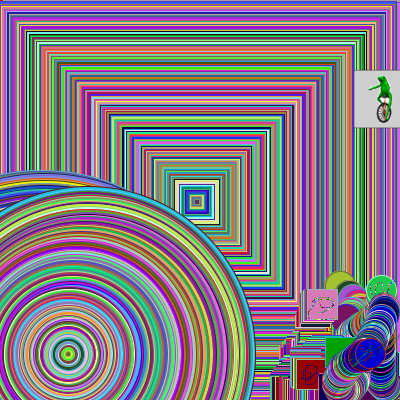
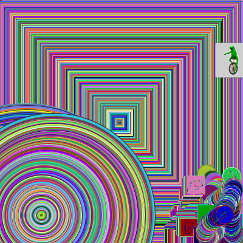
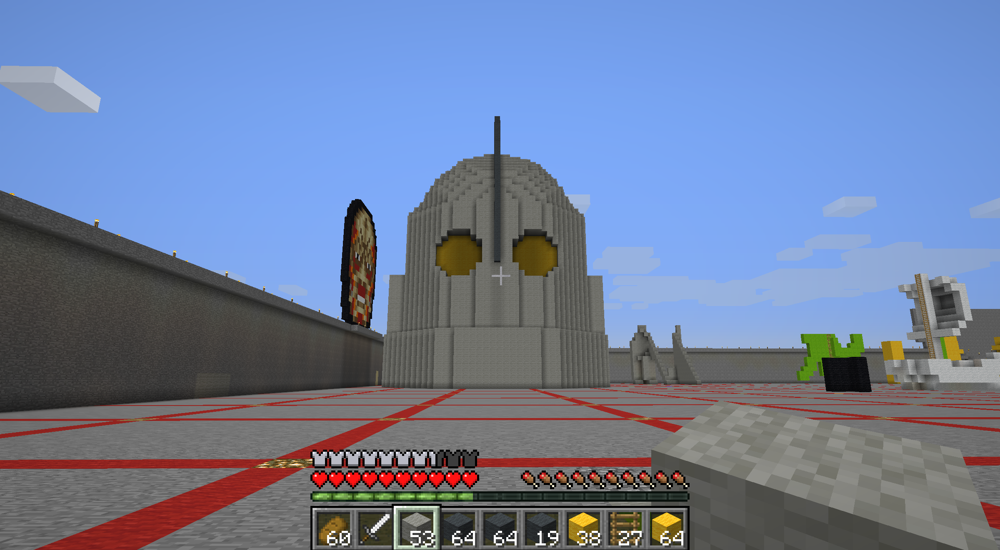

Chris Weber

Hello and welcome to my website! I am a designer/maker at SJSU, and here's a few of my projects I've worked on over the years. My work generally revolves around cosplay or thinking outside the box for projects. I explore works that are semi challenging and usually related to 3D printing, as that's what I'd like to focus on making a career out of.
Iron Giant Model, 3D Printing 2018
Fusion 360, Lulzbot Taz Mini
For this project I combined something I liked from the class, 3d printing, and took it a step further by doing some design modifications in Fusion 360 to make an impressive finished figure. I had previously found an articulate Iron Giant model I liked and made some more additions to it to make it a better figure with bendable legs and light up eyes.
It was a learning process with some trial and error getting all the electronics fitting perfectly inside but it was worth the effort.
To look at the design process that went on behind this project
see more

Robot Jones Model, 3D Printing 2018
Fusion 360, Original Prusa MK3
I did this project to improve on my CAD design skills by modelling from scratch, and made it a challenge for myself to model each piece in a way so it would need no support structures when 3D printed. It is based off the robot main character in the tv show 'Whatever Happened to Robot Jones?'
To look at the design process that went on behind this project
see more

Projected Planets, Projection 2018
Adobe Premiere Pro CC 2018, Video Projector

This is my projection project, I decided to edit together a video of spinning planets in front of space and other moving backgrounds and then project the planet onto a giant poster board circle mounted on a tripod. I used footage from NASA in 4K resolution to get the highest quality detail for the projection.
To look at the design process that went on behind this project
see moreHolographic Prism, Projection 2018
Adobe Premiere Pro CC 2018, LCD Monitor
This project expands the concept of projection by creating a hologram illusion. Instead of using an actual projector it reflects off the 4 sides of a clear acrylic prism, which makes it look as if the object in the video is actually right in front of you. However if you look above the prism you can see there's nothing in it and also see how the illusion works.
Moving View:
Front View:
3D Printer & Model, 3D Printing 2018
Tinkercad, Original Prusa MK3
For this project I made a 3d printed model which I printed on a 3d printer that I assembled from a kit. The assembly took quite a lot of time and was a project in itself but I was able to get it working smoothly and tune it to get nice prints.

Below is the final model once it was finished and post processed.
To look at the design process that went on behind this project
see more
3D Printed Prop, 3D Printing 2017
Lulzbot Taz 5
This prop was made as part of a costume from the tv show Voltron Legendary Defender. I found the model on Thingiverse and 3d printed it at my school's library.
There was a lot of work involved with post processing but in the end it came out perfect for the costume I needed it for. I even added some LED circuitry inside the gem to make the prop really stand out.
To look at the design process that went on behind this project
see more

Skull Mask, Vacuum Forming 2014
Table Saw, Vacuum Former
This was a personal project I made for fun several years ago at a maker space called Tech Shop. It's a skull mask custom made to fit my face, and I used a variety of tools and methods to accomplish this such as vacuum forming.
To look at the design process that went on behind this project
see more

Drawing Program, Processing 2018
Processing 3
I designed a drawing program in processing, where the goal was to make a basic version of Photoshop.
To create it I made local char variables that saved different keys pressed, like 's' for square got saved to the shape variable and 'b' for blue got saved to the colorKey variable. I then made a bunch of enclosed if and if else statements to make the program draw depending on what keys were pressed, along with an else default for if keys weren't pressed.
The color I made to be random(255) in the RGB places so it'd be a random color of the rainbow as default, along with random different stroke color. But I also added the option to type a key and get a random hue of a certain color of RGB or a combination, plus a key to set it back to rainbow.
Additionally I also had a option to change the transparency and size. For transparency you could select a key to change it transparent or opaque, and it made the shape a random level of transparency. The size you could change to grow to the max size to the minimum size or vice versa, plus a key to set it back to default.
 

Here's my files if you want to download and check them out, Portrait is 1kb and Drawing Program is 11kb. Also included are the instructions as a text file.
Minecraft 3D Print, 3D Printing 2018
Minecraft, Tinkercad, Lulzbot Taz Mini
In this project I used Minecraft, a sandbox environment made of blocks, to model an object of cultural significance. I decided to make the head of the Iron Giant robot, as it was a childhood movie for me and others my age.
Because of the limitations of working with blocks it's hard to make anything look round so I decided to make it extremely large so it was as close a representation as possible. It ended up being almost 50 blocks tall and took a while to model evenly, but ended up looking really nice and perfect for the next step from it which was 3d printing our objects.
Once I finished modeling our object in Minecraft I then took it from the server and imported it as a local world file. This made it so I could use a program to extract the object as a 3d model. Because my object was a hollow shell it had trouble getting the bottom layer so there was a big hole in the model.
Since this wouldn't be good for 3d printing I took the model into Tinkercad and filled up the hole with a bunch of squares and rectangles. I designed it with the back of the head flat so it could lay on it and print easily without needing any supports.

After it finished printing I decided to put my artistic skills to work for the post processing. I painted the body silver and the top head scythe with a mix of silver and black. The eyes I painted yellow so it'd show behind the clear LEDs.
Next to it is a quarter for reference to show the scale of it's size.

To really make it feel like a robot I decided to add LEDs for it's eyes. To do this bought some tea light candles and removed a LED from one to wire to the other so it'd have two. Then I positioned the LEDs so the positive ends were next to each other in the middle, making it so I only needed 3 wires to go down to the battery.
The candle base ended up being a nice stand for the print, and with the printed Iron Giant logo on it really brings the piece together.

Meme Mashup 2018
Adobe Photoshop CC 2018, Adobe After Affects CC 2018, Gimp

This project is a mashup of some of my favorite internet memes, the frog 'Dat Boi' and Pokemon. This created a new twist on the meme, as there have been many different versions of "Who's that Pokemon?" with different memes.

To create this I found a example Adobe AfterEffects file online that had the animation Pokemon background I needed. Then I extracted each frame as a jpg and imported it into Photoshop, and edited the text and Dat Boi in. I had them slowly fade in using transparency percentages to make it match the original Pokemon video. To make it animated I extracted the layers as jpgs and imported them in Gimp, then exported it as a GIF.
This was all more than the assignment asked for but I wanted to put my own creative twist on it using the design skills I have.